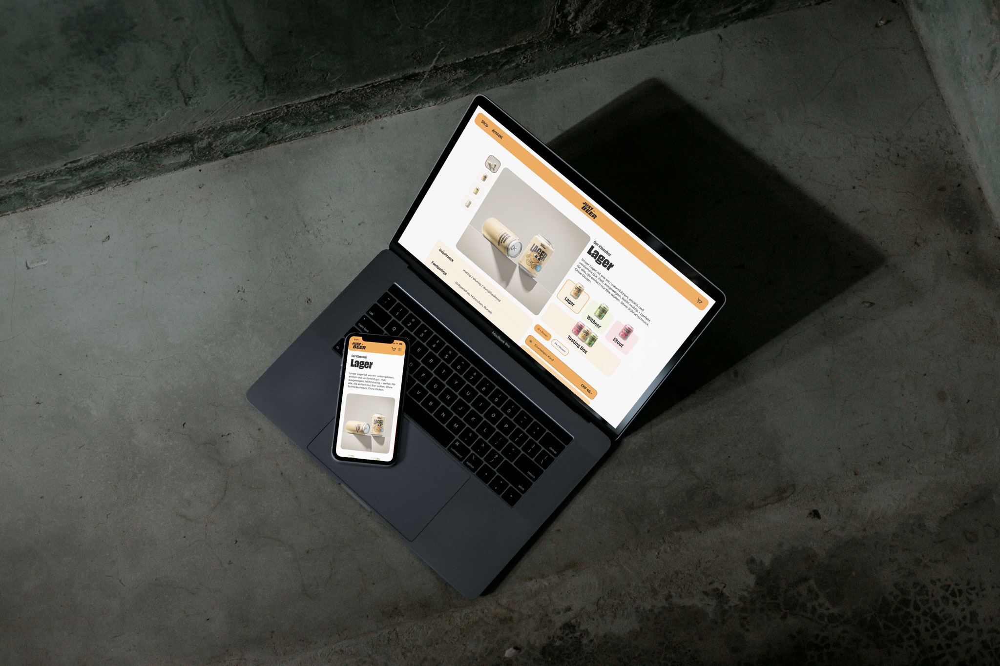
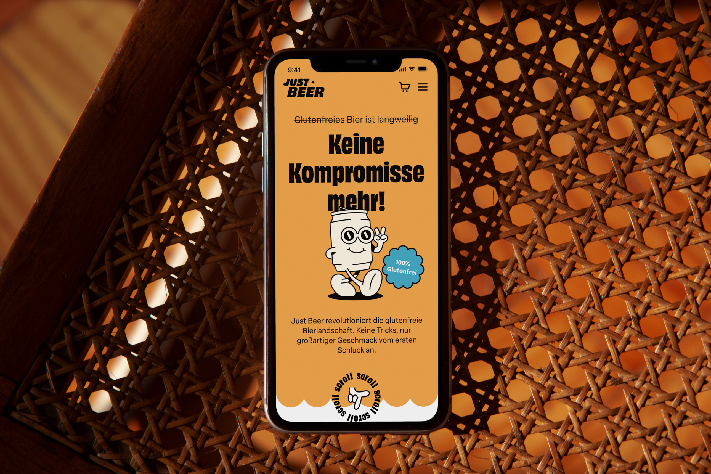
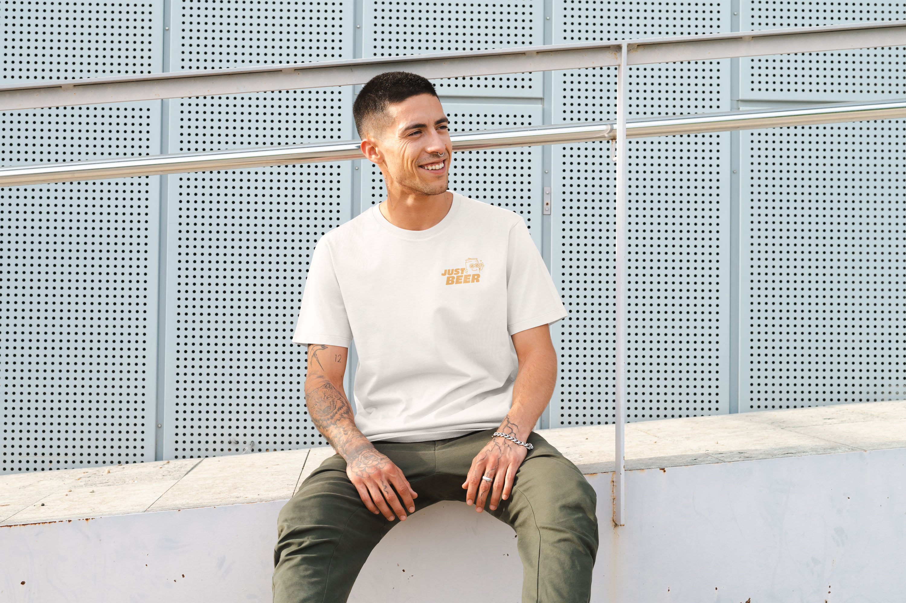
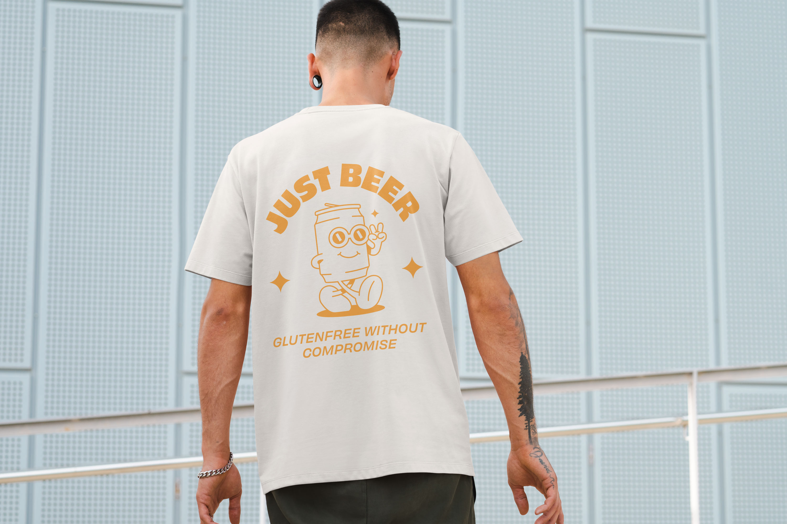
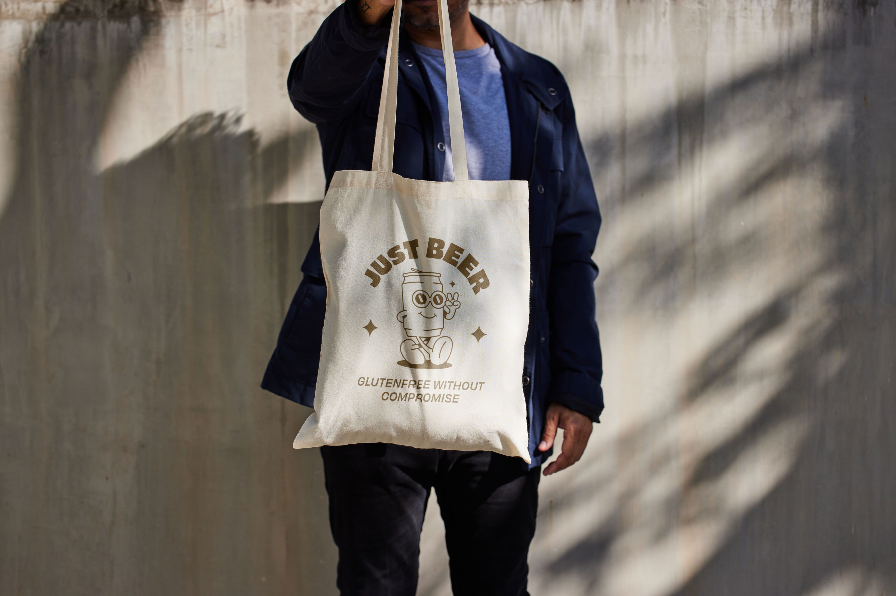
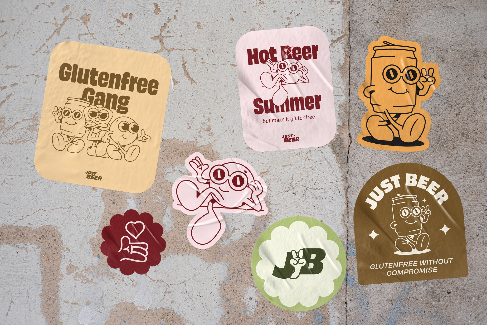
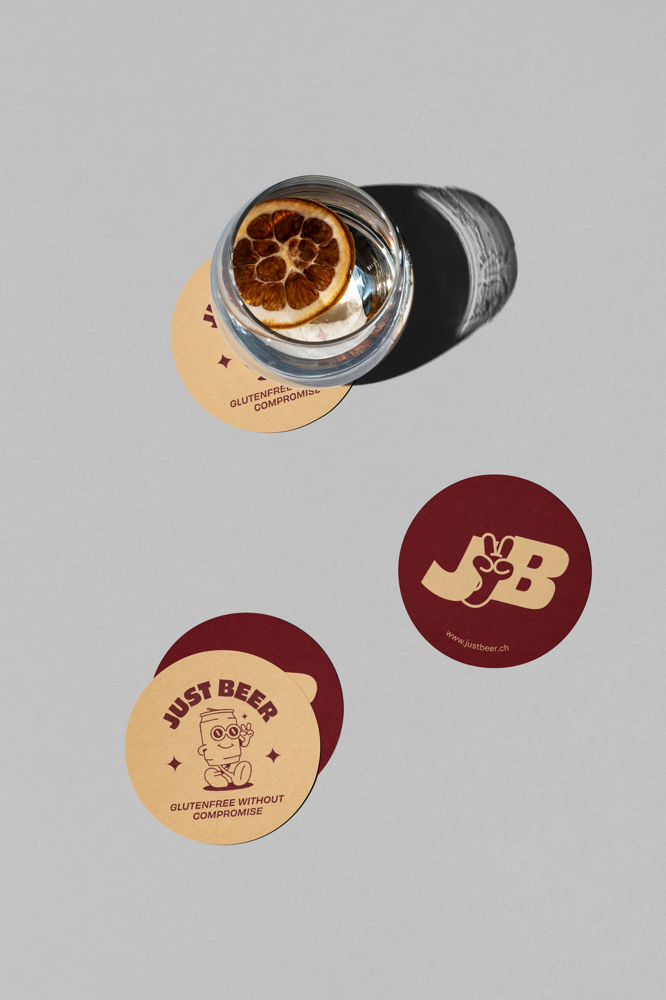

Just Beer: Glutenfreie Mikrobrauerei

Just Beer ist eine fiktive Markenidentität für eine glutenfreie Mikrobrauerei, entstanden im Rahmen meiner Diplomarbeit. Sie wurde entwickelt, um zu beweisen, dass glutenfrei kein geschmacklicher Kompromiss sein muss. Das Ergebnis: ein eigenständiges Logo mit Maskottchen, drei Dosendesigns und eine durchgängige Anwendung über Website, Social Media und Merchandising.
Branding

Website


Merchandising & Social Media






Diplomarbeit im Detail